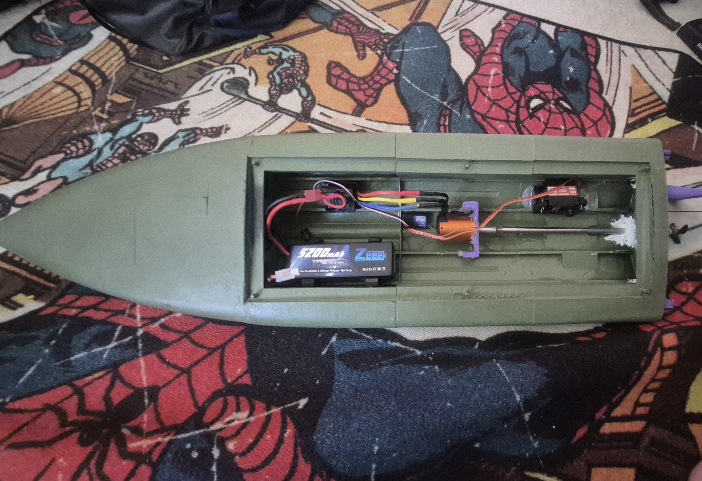
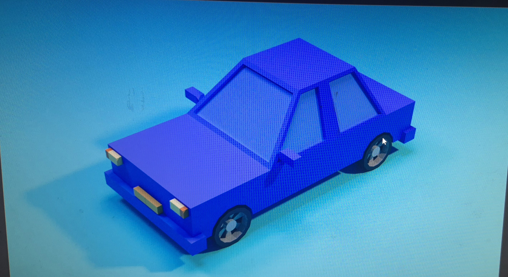

My Projects
3D Printed RC Boat
This is a project where I designed and 3D printed a custom RC boat. The boat is designed for speed and maneuverability, and I'm currently testing its performance on water. I used CAD software to design the boat's body, and the 3D printer took care of the rest. The goal of this project is to explore the possibilities of combining robotics and 3D printing for custom remote-controlled vehicles.
The boat is powered by a small motor, and I’m experimenting with different designs for the hull and propulsion systems to maximize its speed and handling. I’ve been recording the progress and will release a video detailing the boat’s performance soon.
.jpg)
Game Development: A Story of Loss
In my IT class, I’m working on a game where you play as a man whose wife was involved in a car crash. The main character is struggling with schizophrenia, and as a result, he begins seeing things that aren't real. This game explores themes of grief, mental health, and coping with loss through an interactive story.
The game is being developed using Unity, and I’m focusing on creating an immersive experience with complex narrative-driven gameplay. I’m experimenting with visual and audio cues to represent the character’s mental state and his journey through the trauma.